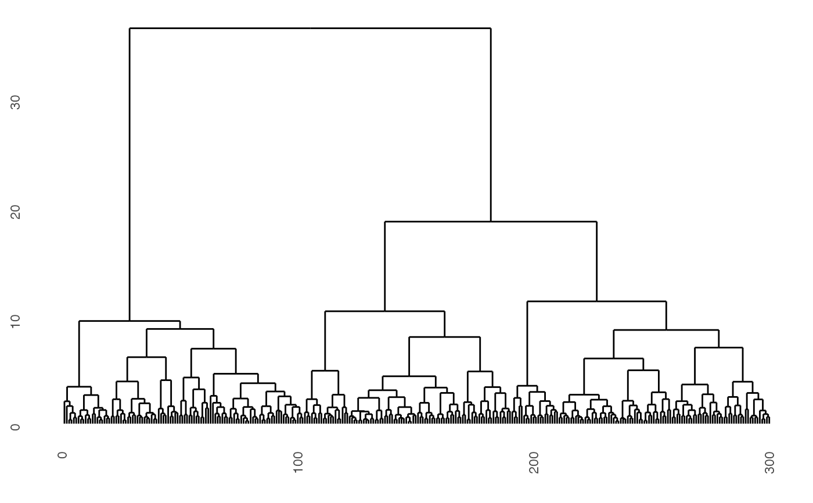

Supplements a data set with information needed to draw a dendrogram. Intermediate cluster nodes are added as needed, and positioned at the centroid of the combined clusters. Note that categorical variables need to be factors.
Examples
data(clusters)
cl_dist <- dist(clusters[,1:5])
cl_hw <- hclust(cl_dist, method="ward.D2")
require(ggdendro)
#> Loading required package: ggdendro
ggdendrogram(cl_hw, type = "triangle", labels = FALSE)

clusters$clw <- factor(cutree(cl_hw, 3))
cl_hfly <- hierfly(clusters, cl_hw, scale=FALSE)
if (interactive) {
glyphs <- c(16, 46)
pch <- glyphs[cl_hfly$data$node+1]
require(colorspace)
clrs <- heat_hcl(length(unique(cl_hfly$data$clw)))
pcol <- clrs[cl_hfly$data$clw]
ecol <- clrs[cl_hfly$data$clw[cl_hfly$edges[,1]]]
animate_xy(cl_hfly$data[,1:5], edges=cl_hfly$edges,
col=pcol, pch=pch, edges.col=ecol,
axes="bottomleft")
}
#> Error in if (interactive) { glyphs <- c(16, 46) pch <- glyphs[cl_hfly$data$node + 1] require(colorspace) clrs <- heat_hcl(length(unique(cl_hfly$data$clw))) pcol <- clrs[cl_hfly$data$clw] ecol <- clrs[cl_hfly$data$clw[cl_hfly$edges[, 1]]] animate_xy(cl_hfly$data[, 1:5], edges = cl_hfly$edges, col = pcol, pch = pch, edges.col = ecol, axes = "bottomleft")}: argument is not interpretable as logical